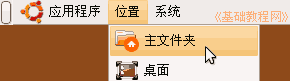
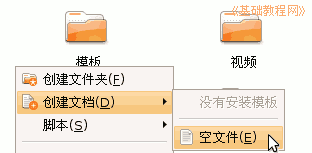
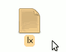
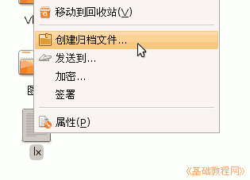
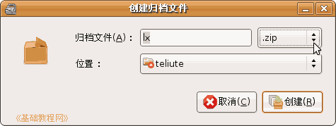
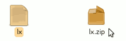
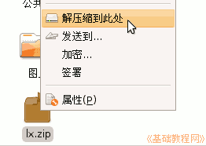

电脑操作基础
作者：TeliuTe 来源：基础教程网
二十一、压缩和解压 返回目录 下一课压缩文件也叫“创建归档文件”，可以用来备份文件，下面我们来看一个练习；
1、创建归档文件
1）点菜单“位置－主文件夹”，进入自己的主目录；

2）在里面空白处点右键，选“创建文档－空文件”命令，
出来一个“新文件”，把文件名改为 lx
 
3）瞄准这个 lx 文件，点右键选“创建归档文件”命令；

4）出来一个创建对话框，左边是压缩文件名，右边是压缩格式类型，
文件名不变，在压缩格式里，选择 zip类型，这个比较通用些，tar.gz 压缩比率要高些；

5）点“创建”命令，就可以创建一个压缩包了，图标是一个压缩包；

如果是文件夹，文件夹里面的文件也要用英文名称，如果是中文，可能在Windows 系统中无法打开；
7）解压缩的时候，只要瞄准压缩包敲右键，选“解压缩到此处”就可以解压了；
本节学习了在Ubuntu中的压缩解压缩基本操作，如果你成功地完成了练习，请继续学习下一课内容；
本教程由86团学校TeliuTe制作|著作权所有，商业用途请与作者联系
基础教程网：http://www.laxjyj.com/teliute/
美丽的校园……
转载和引用本站内容，请保留版权信息和本站链接。